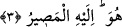
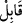

mükemmel kudretine ve sınırsız ilmine delâlet etmektedir.
Fethu’r-Rahmân’da der ki: “Azîz,” misli benzeri olmayan; “Alîm,” bilinmesi
mümkün ve muhtemel olan her şeyi bilen demektir.
Kâşifî de şöyle der: “Azîz”, onu indirmeye gücü yeten Galip olan Allah. “Alîm”, her
zaman herkese gönderdiğini bilen demektir.
3. O, günahı bağışlayan, tevbeyi kabul eden, azabı çetin, lütuf sahibidir. O’ndan
başka hiçbir ilâh yoktur, dönüş ancak O’nadır.
“Günahı bağışlayan” ifadesi, İsm-i Celâl’in bir başka vasfıdır. Buradaki izâfet,
gerçek mânâsındadır. Zira bununla muayyen bir zaman murad olunmamıştır. Zira Cenâb-
ı Hakk’ın sıfatları ezelî olup, bir zamanı hâriçte tutup bir başka zamanla kayıtlanmaktan
ya da yenilenip durmaktan münezzehtir. Ancak bu sıfatların taallukları, ilgili
hâdiselerin, meselâ burada olduğu gibi günahların sonradan meydana gelmesine bağlı
olarak sonradanlık arzedebilir.
Sıfat-ı müşebbehelerin aksine ism-i fâillerin istimrâr ve devamlılık ifâde etmesi
mümkündür. “Gâfir,” örten demektir. “Zenb,” günah anlamında olup kişinin âkıbetine
zarar verecek olan her tür fiille ilgili olarak kullanılır. Bu kullanışta bir şeyin ‘zeneb’i,
yâni sonu hesaba katılmış olmaktadır. Günah cinsi kastedildiği içindir ki, ifâde çoğul
olarak “günahları bağışlayan” değil, “günahı bağışlayan” şeklinde getirilmiştir. Nitekim
“el-hamdü lillâh” ifadesinde de hamd cinsi kasdedilmiştir.
Söz konusu ifade, bu büyük övgü makamının da gerektirdiği üzere, “tevbe edilsin
edilmesin, küçük-büyük tüm günahları örtüp gizleyen ve kıyâmet günü sahibini rezil
etmeyen” anlamına gelmektedir.
“Kãbili’t-tevb/tevbeyi kabûl eden”:
, kuyudan çıkan kovayı karşılayıp alan;
ise, doğum esnasında çocuğu karşılayan demektir. “Mazeret ve tevbesini kabul ettim”
gibi ifadeler bu kökten gelmektedir. “Tevb” ise “tevbe” gibi masdar olup bir günahı bir
açıdan terk etmek anlamındadır ve mazeret beyan etmenin en beliğ şeklidir. Zira mazeret
beyanı, üç türlü olabilir: Mazeret beyan eden kişi ya “yapmadım” der; veya “yaptım
ama şu yüzden yaptım” der; ya da “yaptım, ancak kötü bir şey yaptığımın farkındayım ve
bunu bir daha yapmayacağım!” der. Bunun bir dördüncü şıkkı yoktur. İşte tevbe, bu
şıkların üçüncüsüdür.
Tevbe şeriat ıstılahında, kusurundan dolayı pişman olarak günahı terketmek ve ona bir
daha dönmemeğe kesin karar vererek dönmemek için elinden geleni yapmaya çalışmak
demektir. İşte ancak bu dört şart yerine getirildiği zaman tevbenin şartları yerine gelmiş